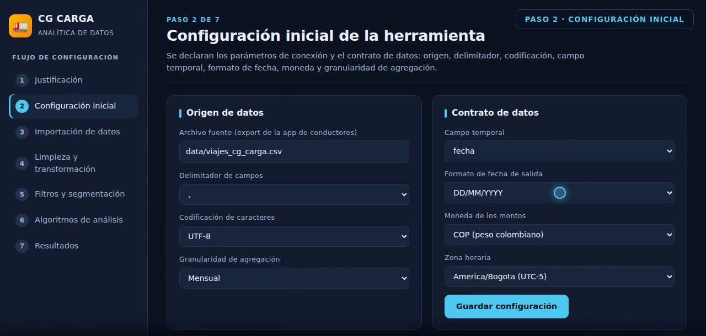
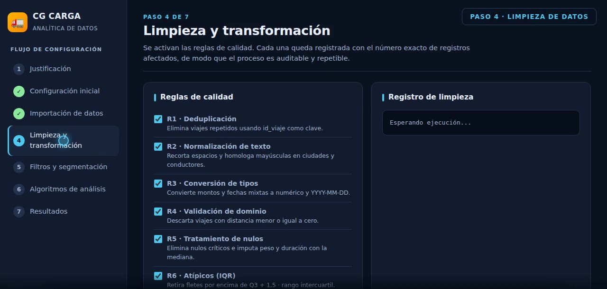
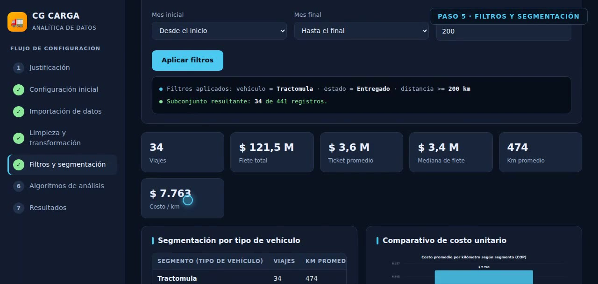
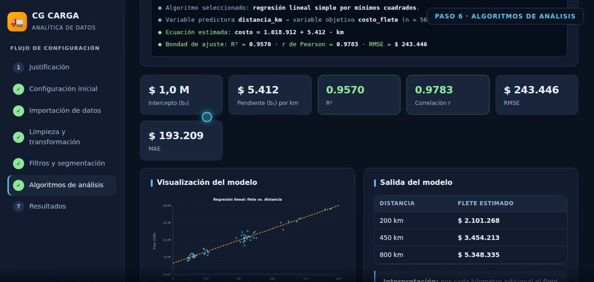
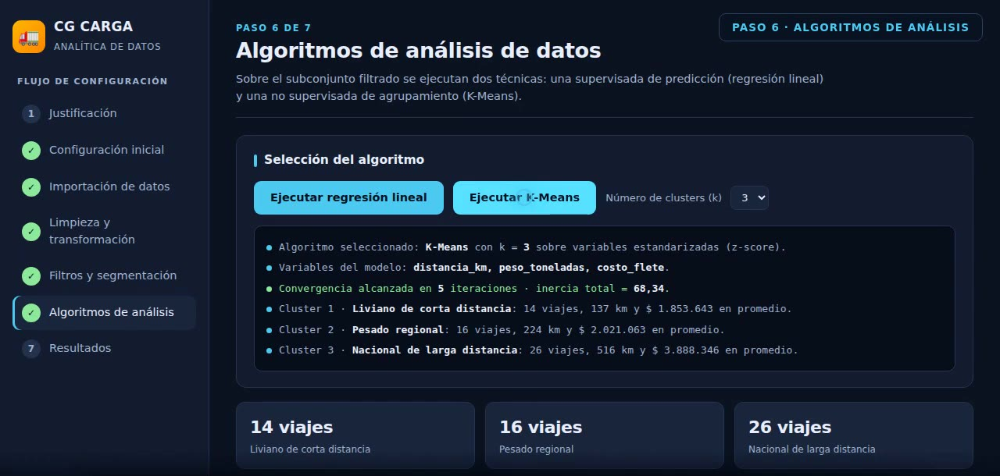
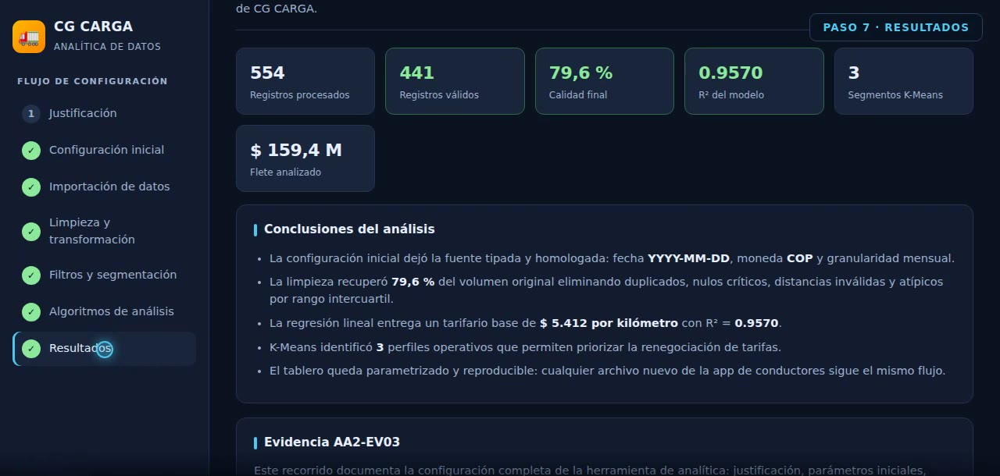

| Nombre del aprendiz | Escriba aquí su nombre completo |
| Número de documento | Escriba aquí su documento |
| Número de ficha | Escriba aquí su ficha |
| Nombre del instructor | Escriba aquí el nombre del instructor |
| Fecha de entrega | DD / MM / AAAA |
| Programa de formación | Aplicación de la inteligencia artificial en la integración de datos |
| Resultado de aprendizaje | 220501115-02 · Procesar datos implementando herramientas de inteligencia artificial generativa, procedimiento técnico y metodología estadística |
| Actividad de aprendizaje | AA2 · Procesar conjuntos de datos mediante el uso de herramientas de inteligencia artificial generativa y técnicas estadísticas, según una metodología técnica definida |
| Evidencia | AA2-EV03 · Video configuración de analítica de datos |
| Duración del video | 6 minutos 35 segundos · 1280 × 720 px · MP4 (H.264) |
AA2-EV03-configuracion-analitica.mp4, reemplace el texto anterior por el enlace real
y ábralo en una ventana de incógnito para confirmar que reproduce sin pedir permisos.La aplicación de conductores de CG CARGA exporta cada semana un archivo CSV con los viajes realizados. Ese archivo llega con registros reenviados por la app, celdas vacías, montos escritos con símbolo de moneda y fechas en tres formatos distintos, por lo que no puede analizarse directamente.
Se evaluaron cuatro alternativas y se seleccionó una consola de analítica propia ejecutada en el navegador, por los criterios que se resumen a continuación:
| Alternativa | Ventaja | Limitación frente al caso |
|---|---|---|
| Hoja de cálculo (Excel) | Conocida por el equipo | La limpieza es manual y no deja registro auditable |
| Power BI | Visualización potente | Requiere licencia por usuario para compartir |
| Looker Studio | Gratuito y colaborativo | Obliga a subir datos operativos a la nube |
| Consola propia (seleccionada) | Reglas escritas, log de cada transformación, costo cero, ejecución local | Requiere desarrollo inicial, que ya está hecho |
Los criterios decisorios fueron reproducibilidad (las reglas quedan escritas y no dependen de clics), trazabilidad (cada transformación deja evidencia en pantalla con el conteo exacto de registros afectados), costo cero y portabilidad.
| Minuto | Etapa | Qué se configura y se demuestra |
|---|---|---|
| 00:00 – 00:44 | Justificación | Problema de negocio, alternativas evaluadas y arquitectura del flujo analítico de siete etapas. |
| 00:45 – 01:36 | Configuración inicial | Origen de datos, delimitador, codificación UTF-8, granularidad mensual, campo temporal, formato de fecha, moneda COP y zona horaria. |
| 01:37 – 02:19 | Importación y perfilado | Carga de 554 registros y 12 campos; perfilado automático de nulos, duplicados, tipos inferidos y valores fuera de dominio. |
| 02:20 – 03:23 | Limpieza y transformación | Seis reglas de calidad (R1 a R6) más el enriquecimiento R7, cada una con su conteo de registros afectados. |
| 03:24 – 04:36 | Filtros y segmentación | Filtros por vehículo, estado y distancia mínima; segmentación por tipo de vehículo y ajuste del subconjunto de entrenamiento. |
| 04:37 – 05:58 | Algoritmos de análisis | Regresión lineal por mínimos cuadrados y agrupamiento K-Means con estandarización z-score. |
| 05:59 – 06:35 | Resultados | Indicadores del pipeline completo y conclusiones accionables. |

El perfilado de calidad, ejecutado automáticamente al importar, reportó 70 celdas vacías, 34 identificadores duplicados y 15 viajes con distancia negativa sobre 554 registros crudos. Sobre ese diagnóstico se aplicaron las reglas de limpieza:
| Regla | Técnica | Efecto medido |
|---|---|---|
| R1 | Deduplicación por clave | 34 registros repetidos eliminados usando id_viaje |
| R2 | Normalización de texto | Espacios, mayúsculas y acentos homologados en ciudades y conductores |
| R3 | Conversión de tipos | $ 1.234.000 → 1234000; tres formatos de fecha unificados a YYYY-MM-DD |
| R4 | Validación de dominio | 14 viajes con distancia menor o igual a cero descartados |
| R5 | Tratamiento de nulos | 38 registros sin costo o distancia eliminados; 30 valores imputados con la mediana |
| R6 | Atípicos por rango intercuartil | 27 fletes por encima de Q3 + 1,5 · IQR retirados |
| R7 | Enriquecimiento | Campos calculados costo_por_km, rendimiento_km_gal, ruta y mes |
Resultado: de 554 registros crudos se obtuvieron 441 registros válidos, es decir una retención del 79,6 % del volumen original.

Sobre el conjunto limpio se demuestra el efecto de los parámetros de análisis. Primero se revisa el universo completo (441 viajes) y su segmentación por tipo de vehículo; luego se restringe a tractomulas efectivamente entregadas con distancia mínima de 200 km, lo que deja solo 34 observaciones; finalmente se libera la distancia mínima para conservar un segmento homogéneo de 56 viajes, adecuado para ajustar un tarifario por kilómetro.
Tipo de vehículoCiudad de origenEstado del viaje Mes inicial y finalDistancia mínima

Variable predictora distancia_km, variable objetivo costo_flete, sobre las 56 observaciones
del segmento de tractomulas entregadas.
| Parámetro | Valor obtenido | Interpretación |
|---|---|---|
| Ecuación estimada | costo = 1.018.912 + 5.412 · km | Tarifa fija más costo variable por kilómetro |
| Pendiente (b₁) | $ 5.412 por km | Tarifario base para cotizar rutas nuevas |
| R² (determinación) | 0,9570 | El modelo explica el 95,7 % de la variabilidad del flete |
| r de Pearson | 0,9783 | Correlación positiva muy fuerte |
| RMSE | $ 243.446 | Error típico de la predicción |
| MAE | $ 193.209 | Desviación media absoluta |

Variables distancia_km, peso_toneladas y costo_flete estandarizadas con
z-score, con k = 3. El algoritmo convergió en 5 iteraciones con una inercia total de 68,34.
| Cluster | Perfil operativo | Viajes | Km promedio | Flete promedio |
|---|---|---|---|---|
| 1 | Liviano de corta distancia | 14 | 137 km | $ 1.853.643 |
| 2 | Pesado regional | 16 | 224 km | $ 2.021.063 |
| 3 | Nacional de larga distancia | 26 | 516 km | $ 3.888.346 |

YYYY-MM-DD,
moneda en pesos colombianos y granularidad mensual, de modo que cualquier archivo nuevo de la app de
conductores entra por el mismo contrato de datos.
| Firma del aprendiz | Fecha de entrega |